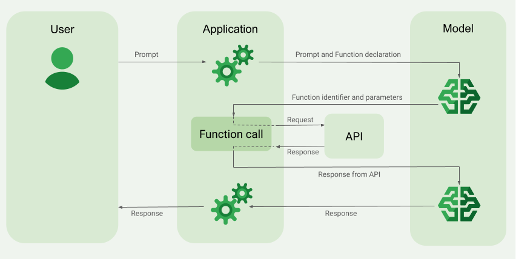

Introduction to function calling¶
Function calling, also known as tool use, provides a large language model (LLM) with definitions of external tools (for example, a get_current_weather function). When processing a prompt, the model intelligently determines if a tool is needed and, if so, outputs structured data specifying the tool to call and its parameters (for example, get_current_weather(location='Boston')). Your application then executes this tool and feeds the result back to the model, allowing it to complete its response with dynamic, real-world information or the outcome of an action. This effectively bridges the LLM with your systems and extends its capabilities.

Function calling enables two primary use cases:
- Fetching data: Retrieve up-to-date information for model responses, such as current weather, currency conversion, or specific data from knowledge bases and APIs (RAG).
- Taking action: Perform external operations like submitting forms, updating application state, or orchestrating agentic workflows (for example, conversation handoffs).
For more use cases and examples that are powered by function calling, see Use cases.
Try the notebook tutorial¶
To see an example of function calling, run the "Intro to Function Calling with the Gemini API" Jupyter notebook in one of the following environments:
Open in Colab Open in Colab Enterprise Open in Vertex AI Workbench View on GitHub
Supported models and features¶
The following models support function calling:
- Gemini 2.5 Flash-Lite (Preview)
- Gemini 2.5 Flash with Live API native audio (Preview)
- Gemini 2.0 Flash with Live API (Preview)
- Vertex AI Model Optimizer (Experimental)
- Gemini 2.5 Pro
- Gemini 2.5 Flash
- Gemini 2.0 Flash
- Gemini 2.0 Flash-Lite
Limitations:
- You can specify up to 128
FunctionDeclarations. - Define your functions in the OpenAPI schema format.
- For best practices related to the function declarations, including tips for names and descriptions, see Best practices.
How to create a function calling application¶
This section shows you how to build an application that uses function calling. The process involves two main steps: first, you send the model your function declarations and a prompt; second, you provide the model with the output from the function call.
flowchart LR
A[Step 1: Submit prompt and function declarations] --> B[Step 2: Provide API output to the model]
click A "#step-1-submit-the-prompt-and-function-declarations-to-the-model"
click B "#step-2-provide-the-api-output-to-the-model"Steps to create a function calling application
Step 1: Submit the prompt and function declarations to the model
Declare a Tool in a schema format that's compatible with the OpenAPI schema. For more information, see Schema examples.
The following examples submit a prompt and function declaration to the model.
Troubleshooting
If you encounter issues with code snippets or setup, refer to the Troubleshooting Guide.
PROJECT_ID=myproject
LOCATION=us-central1
MODEL_ID=gemini-2.0-flash-001
curl -X POST \
-H "Authorization: Bearer $(gcloud auth print-access-token)" \
-H "Content-Type: application/json" \
https://${LOCATION}-aiplatform.googleapis.com/v1/projects/${PROJECT_ID}/locations/${LOCATION}/publishers/google/models/${MODEL_ID}:generateContent \
-d '{
"contents": [{
"role": "user",
"parts": [{
"text": "What is the weather in Boston?"
}]
}],
"tools": [{
"functionDeclarations": [
{
"name": "get_current_weather",
"description": "Get the current weather in a given location",
"parameters": {
"type": "object",
"properties": {
"location": {
"type": "string",
"description": "The city name of the location for which to get the weather.",
"default": {
"string_value": "Boston, MA"
}
}
},
"required": [
"location"
]
}
}
]
}]
}'
You can specify the schema either manually using a Python dictionary or automatically with the from_func helper function.
The following example demonstrates how to declare a function manually.
import vertexai
from vertexai.generative_models import (
Content,
FunctionDeclaration,
GenerationConfig,
GenerativeModel,
Part,
Tool,
ToolConfig
)
# Initialize Vertex AI
# TODO(developer): Update the project
vertexai.init(project="PROJECT_ID", location="us-central1")
# Initialize Gemini model
model = GenerativeModel(model_name="gemini-2.0-flash")
# Manual function declaration
get_current_weather_func = FunctionDeclaration(
name="get_current_weather",
description="Get the current weather in a given location",
# Function parameters are specified in JSON schema format
parameters={
"type": "object",
"properties": {
"location": {
"type": "string",
"description": "The city name of the location for which to get the weather.",
"default": {
"string_value": "Boston, MA"
}
}
},
},
)
response = model.generate_content(
contents = [
Content(
role="user",
parts=[
Part.from_text("What is the weather like in Boston?"),
],
)
],
generation_config = GenerationConfig(temperature=0),
tools = [
Tool(
function_declarations=[get_current_weather_func],
)
]
)
Alternatively, you can declare the function automatically with the from_func helper function as shown in the following example:
def get_current_weather(location: str = "Boston, MA"):
"""
Get the current weather in a given location
Args:
location: The city name of the location for which to get the weather.
"""
# This example uses a mock implementation.
# You can define a local function or import the requests library to call an API
return {
"location": "Boston, MA",
"temperature": 38,
"description": "Partly Cloudy",
"icon": "partly-cloudy",
"humidity": 65,
"wind": {
"speed": 10,
"direction": "NW"
}
}
get_current_weather_func = FunctionDeclaration.from_func(get_current_weather)
Before trying this sample, follow the Node.js setup instructions in the Vertex AI quickstart using client libraries. For more information, see the Vertex AI Node.js API reference documentation.
To authenticate to Vertex AI, set up Application Default Credentials. For more information, see Set up authentication for a local development environment.
const {
VertexAI,
FunctionDeclarationSchemaType,
} = require('@google-cloud/vertexai');
const functionDeclarations = [
{
function_declarations: [
{
name: 'get_current_weather',
description: 'get weather in a given location',
parameters: {
type: FunctionDeclarationSchemaType.OBJECT,
properties: {
location: {type: FunctionDeclarationSchemaType.STRING},
unit: {
type: FunctionDeclarationSchemaType.STRING,
enum: ['celsius', 'fahrenheit'],
},
},
required: ['location'],
},
},
],
},
];
const functionResponseParts = [
{
functionResponse: {
name: 'get_current_weather',
response: {name: 'get_current_weather', content: {weather: 'super nice'}},
},
},
];
/**
* TODO(developer): Update these variables before running the sample.
*/
async function functionCallingStreamContent(
projectId = 'PROJECT_ID',
location = 'us-central1',
model = 'gemini-2.0-flash-001'
) {
// Initialize Vertex with your Cloud project and location
const vertexAI = new VertexAI({project: projectId, location: location});
// Instantiate the model
const generativeModel = vertexAI.getGenerativeModel({
model: model,
});
const request = {
contents: [
{role: 'user', parts: [{text: 'What is the weather in Boston?'}]},
{
role: 'ASSISTANT',
parts: [
{
functionCall: {
name: 'get_current_weather',
args: {location: 'Boston'},
},
},
],
},
{role: 'USER', parts: functionResponseParts},
],
tools: functionDeclarations,
};
const streamingResp = await generativeModel.generateContentStream(request);
for await (const item of streamingResp.stream) {
console.log(item.candidates[0].content.parts[0].text);
}
}
Learn how to install or update the Gen AI SDK for Go. To learn more, see the SDK reference documentation.
Set environment variables to use the Gen AI SDK with Vertex AI:
# Replace the `GOOGLE_CLOUD_PROJECT` and `GOOGLE_CLOUD_LOCATION` values
# with appropriate values for your project.
export GOOGLE_CLOUD_PROJECT=GOOGLE_CLOUD_PROJECT
export GOOGLE_CLOUD_LOCATION=global
export GOOGLE_GENAI_USE_VERTEXAI=True
import (
"context"
"fmt"
"io"
genai "google.golang.org/genai"
)
// generateWithFuncCall shows how to submit a prompt and a function declaration to the model,
// allowing it to suggest a call to the function to fetch external data. Returning this data
// enables the model to generate a text response that incorporates the data.
func generateWithFuncCall(w io.Writer) error {
ctx := context.Background()
client, err := genai.NewClient(ctx, &genai.ClientConfig{
HTTPOptions: genai.HTTPOptions{APIVersion: "v1"},
})
if err != nil {
return fmt.Errorf("failed to create genai client: %w", err)
}
weatherFunc := &genai.FunctionDeclaration{
Description: "Returns the current weather in a location.",
Name: "getCurrentWeather",
Parameters: &genai.Schema{
Type: "object",
Properties: map[string]*genai.Schema{
"location": {Type: "string"},
},
Required: []string{"location"},
},
}
config := &genai.GenerateContentConfig{
Tools: []*genai.Tool{
{FunctionDeclarations: []*genai.FunctionDeclaration{weatherFunc}},
},
Temperature: genai.Ptr(0.0),
}
modelName := "gemini-2.0-flash-001"
contents := []*genai.Content{
{Parts: []*genai.Part{
{Text: "What is the weather like in Boston?"},
}},
}
resp, err := client.Models.GenerateContent(ctx, modelName, contents, config)
if err != nil {
return fmt.Errorf("failed to generate content: %w", err)
}
var funcCall *genai.FunctionCall
for _, p := range resp.Candidates[0].Content.Parts {
if p.FunctionCall != nil {
funcCall = p.FunctionCall
fmt.Fprint(w, "The model suggests to call the function ")
fmt.Fprintf(w, "%q with args: %v\n", funcCall.Name, funcCall.Args)
// Example response:
// The model suggests to call the function "getCurrentWeather" with args: map[location:Boston]
}
}
if funcCall == nil {
return fmt.Errorf("model did not suggest a function call")
}
// Use synthetic data to simulate a response from the external API.
// In a real application, this would come from an actual weather API.
funcResp := &genai.FunctionResponse{
Name: "getCurrentWeather",
Response: map[string]any{
"location": "Boston",
"temperature": "38",
"temperature_unit": "F",
"description": "Cold and cloudy",
"humidity": "65",
"wind": `{"speed": "10", "direction": "NW"}`,
},
}
// Return conversation turns and API response to complete the model's response.
contents = []*genai.Content{
{Parts: []*genai.Part{
{Text: "What is the weather like in Boston?"},
}},
{Parts: []*genai.Part{
{FunctionCall: funcCall},
}},
{Parts: []*genai.Part{
{FunctionResponse: funcResp},
}},
}
resp, err = client.Models.GenerateContent(ctx, modelName, contents, config)
if err != nil {
return fmt.Errorf("failed to generate content: %w", err)
}
respText, err := resp.Text()
if err != nil {
return fmt.Errorf("failed to convert model response to text: %w", err)
}
fmt.Fprintln(w, respText)
// Example response:
// The weather in Boston is cold and cloudy with a temperature of 38 degrees Fahrenheit. The humidity is ...
return nil
}
Before trying this sample, follow the C# setup instructions in the Vertex AI quickstart using client libraries. For more information, see the Vertex AI C# API reference documentation.
To authenticate to Vertex AI, set up Application Default Credentials. For more information, see Set up authentication for a local development environment.
using Google.Cloud.AIPlatform.V1;
using System;
using System.Threading.Tasks;
using Type = Google.Cloud.AIPlatform.V1.Type;
using Value = Google.Protobuf.WellKnownTypes.Value;
public class FunctionCalling
{
public async Task<string> GenerateFunctionCall(
string projectId = "your-project-id",
string location = "us-central1",
string publisher = "google",
string model = "gemini-2.0-flash-001")
{
var predictionServiceClient = new PredictionServiceClientBuilder
{
Endpoint = $"{location}-aiplatform.googleapis.com"
}.Build();
// Define the user's prompt in a Content object that we can reuse in
// model calls
var userPromptContent = new Content
{
Role = "USER",
Parts =
{
new Part { Text = "What is the weather like in Boston?" }
}
};
// Specify a function declaration and parameters for an API request
var functionName = "get_current_weather";
var getCurrentWeatherFunc = new FunctionDeclaration
{
Name = functionName,
Description = "Get the current weather in a given location",
Parameters = new OpenApiSchema
{
Type = Type.Object,
Properties =
{
["location"] = new()
{
Type = Type.String,
Description = "Get the current weather in a given location"
},
["unit"] = new()
{
Type = Type.String,
Description = "The unit of measurement for the temperature",
Enum = {"celsius", "fahrenheit"}
}
},
Required = { "location" }
}
};
// Send the prompt and instruct the model to generate content using the tool that you just created
var generateContentRequest = new GenerateContentRequest
{
Model = $"projects/{projectId}/locations/{location}/publishers/{publisher}/models/{model}",
GenerationConfig = new GenerationConfig
{
Temperature = 0f
},
Contents =
{
userPromptContent
},
Tools =
{
new Tool
{
FunctionDeclarations = { getCurrentWeatherFunc }
}
}
};
GenerateContentResponse response = await predictionServiceClient.GenerateContentAsync(generateContentRequest);
var functionCall = response.Candidates[0].Content.Parts[0].FunctionCall;
Console.WriteLine(functionCall);
string apiResponse = "";
// Check the function name that the model responded with, and make an API call to an external system
if (functionCall.Name == functionName)
{
// Extract the arguments to use in your API call
string locationCity = functionCall.Args.Fields["location"].StringValue;
// Here you can use your preferred method to make an API request to
// fetch the current weather
// In this example, we'll use synthetic data to simulate a response
// payload from an external API
apiResponse = @"{ ""location"": ""Boston, MA"",
""temperature"": 38, ""description"": ""Partly Cloudy""}";
}
// Return the API response to Gemini so it can generate a model response or request another function call
generateContentRequest = new GenerateContentRequest
{
Model = $"projects/{projectId}/locations/{location}/publishers/{publisher}/models/{model}",
Contents =
{
userPromptContent, // User prompt
response.Candidates[0].Content, // Function call response,
new Content
{
Parts =
{
new Part
{
FunctionResponse = new()
{
Name = functionName,
Response = new()
{
Fields =
{
{ "content", new Value { StringValue = apiResponse } }
}
}
}
}
}
}
},
Tools =
{
new Tool
{
FunctionDeclarations = { getCurrentWeatherFunc }
}
}
};
response = await predictionServiceClient.GenerateContentAsync(generateContentRequest);
string responseText = response.Candidates[0].Content.Parts[0].Text;
Console.WriteLine(responseText);
return responseText;
}
}
Before trying this sample, follow the Java setup instructions in the Vertex AI quickstart using client libraries. For more information, see the Vertex AI Java API reference documentation.
To authenticate to Vertex AI, set up Application Default Credentials. For more information, see Set up authentication for a local development environment.
import com.google.cloud.vertexai.VertexAI;
import com.google.cloud.vertexai.api.Content;
import com.google.cloud.vertexai.api.FunctionDeclaration;
import com.google.cloud.vertexai.api.GenerateContentResponse;
import com.google.cloud.vertexai.api.Schema;
import com.google.cloud.vertexai.api.Tool;
import com.google.cloud.vertexai.api.Type;
import com.google.cloud.vertexai.generativeai.ChatSession;
import com.google.cloud.vertexai.generativeai.ContentMaker;
import com.google.cloud.vertexai.generativeai.GenerativeModel;
import com.google.cloud.vertexai.generativeai.PartMaker;
import com.google.cloud.vertexai.generativeai.ResponseHandler;
import java.io.IOException;
import java.util.Arrays;
import java.util.Collections;
public class FunctionCalling {
public static void main(String[] args) throws IOException {
// TODO(developer): Replace these variables before running the sample.
String projectId = "your-google-cloud-project-id";
String location = "us-central1";
String modelName = "gemini-2.0-flash-001";
String promptText = "What's the weather like in Paris?";
whatsTheWeatherLike(projectId, location, modelName, promptText);
}
// A request involving the interaction with an external tool
public static String whatsTheWeatherLike(String projectId, String location,
String modelName, String promptText)
throws IOException {
// Initialize client that will be used to send requests.
// This client only needs to be created once, and can be reused for multiple requests.
try (VertexAI vertexAI = new VertexAI(projectId, location)) {
FunctionDeclaration functionDeclaration = FunctionDeclaration.newBuilder()
.setName("getCurrentWeather")
.setDescription("Get the current weather in a given location")
.setParameters(
Schema.newBuilder()
.setType(Type.OBJECT)
.putProperties("location", Schema.newBuilder()
.setType(Type.STRING)
.setDescription("location")
.build()
)
.addRequired("location")
.build()
)
.build();
System.out.println("Function declaration:");
System.out.println(functionDeclaration);
// Add the function to a "tool"
Tool tool = Tool.newBuilder()
.addFunctionDeclarations(functionDeclaration)
.build();
// Start a chat session from a model, with the use of the declared function.
GenerativeModel model = new GenerativeModel(modelName, vertexAI)
.withTools(Arrays.asList(tool));
ChatSession chat = model.startChat();
System.out.println(String.format("Ask the question: %s", promptText));
GenerateContentResponse response = chat.sendMessage(promptText);
// The model will most likely return a function call to the declared
// function `getCurrentWeather` with "Paris" as the value for the
// argument `location`.
System.out.println("\nPrint response: ");
System.out.println(ResponseHandler.getContent(response));
// Provide an answer to the model so that it knows what the result
// of a "function call" is.
Content content =
ContentMaker.fromMultiModalData(
PartMaker.fromFunctionResponse(
"getCurrentWeather",
Collections.singletonMap("currentWeather", "sunny")));
System.out.println("Provide the function response: ");
System.out.println(content);
response = chat.sendMessage(content);
// See what the model replies now
System.out.println("Print response: ");
String finalAnswer = ResponseHandler.getText(response);
System.out.println(finalAnswer);
return finalAnswer;
}
}
}
If the model determines that it needs the output of a particular function, the response that the application receives from the model contains the function name and the parameter values that the function should be called with.
The following is an example of a model response to the user prompt "What is the weather like in Boston?". The model proposes calling the get_current_weather function with the parameter Boston, MA.
candidates {
content {
role: "model"
parts {
function_call {
name: "get_current_weather"
args {
fields {
key: "location"
value {
string_value: "Boston, MA"
}
}
}
}
}
}
...
}
Step 2: Provide the API output to the model
Invoke the external API and pass the API output back to the model. The following example uses synthetic data to simulate a response payload from an external API and submits the output back to the model.
PROJECT_ID=myproject
MODEL_ID=gemini-2.0-flash
LOCATION="us-central1"
curl -X POST \
-H "Authorization: Bearer $(gcloud auth print-access-token)" \
-H "Content-Type: application/json" \
https://${LOCATION}-aiplatform.googleapis.com/v1/projects/${PROJECT_ID}/locations/${LOCATION}/publishers/google/models/${MODEL_ID}:generateContent \
-d '{
"contents": [
{
"role": "user",
"parts": {
"text": "What is the weather in Boston?"
}
},
{
"role": "model",
"parts": [
{
"functionCall": {
"name": "get_current_weather",
"args": {
"location": "Boston, MA"
}
}
}
]
},
{
"role": "user",
"parts": [
{
"functionResponse": {
"name": "get_current_weather",
"response": {
"temperature": 20,
"unit": "C"
}
}
}
]
}
],
"tools": [
{
"function_declarations": [
{
"name": "get_current_weather",
"description": "Get the current weather in a specific location",
"parameters": {
"type": "object",
"properties": {
"location": {
"type": "string",
"description": "The city name of the location for which to get the weather."
}
},
"required": [
"location"
]
}
}
]
}
]
}'
function_response_contents = []
function_response_parts = []
# Iterates through the function calls in the response in case there are parallel function call requests
for function_call in response.candidates[0].function_calls:
print(f"Function call: {function_call.name}")
# In this example, we'll use synthetic data to simulate a response payload from an external API
if (function_call.args['location'] == "Boston, MA"):
api_response = { "location": "Boston, MA", "temperature": 38, "description": "Partly Cloudy" }
if (function_call.args['location'] == "San Francisco, CA"):
api_response = { "location": "San Francisco, CA", "temperature": 58, "description": "Sunny" }
function_response_parts.append(
Part.from_function_response(
name=function_call.name,
response={"contents": api_response}
)
)
# Add the function call response to the contents
function_response_contents = Content(role="user", parts=function_response_parts)
# Submit the User's prompt, model's response, and API output back to the model
response = model.generate_content(
[
Content( # User prompt
role="user",
parts=[
Part.from_text("What is the weather like in Boston?"),
],
),
response.candidates[0].content, # Function call response
function_response_contents # API output
],
tools=[
Tool(
function_declarations=[get_current_weather_func],
)
],
)
# Get the model summary response
print(response.text)
If the model determines that the API response is sufficient for responding to the user's prompt, it creates a natural language response and returns it to the application.
Example of a natural language response:
Advanced use cases¶
Parallel function calling¶
For prompts such as "Get weather details in Boston and San Francisco?", the model may propose several parallel function calls. For a list of models that support parallel function calling, see Supported models.
To learn about parallel function calling with an end-to-end Jupyter notebook tutorial, see Working with Parallel Function Calls and Multiple Function Responses in Gemini.
This example demonstrates a scenario with one get_current_weather function. The user prompt is "Get weather details in Boston and San Francisco?". The model proposes two parallel get_current_weather function calls: one with the parameter Boston and the other with the parameter San Francisco.
To learn more about the request parameters, see Gemini API.
Model Response
{
"candidates": [
{
"content": {
"role": "model",
"parts": [
{
"functionCall": {
"name": "get_current_weather",
"args": {
"location": "Boston"
}
}
},
{
"functionCall": {
"name": "get_current_weather",
"args": {
"location": "San Francisco"
}
}
}
]
},
...
}
],
...
}
Model Request
PROJECT_ID=my-project
MODEL_ID=gemini-2.0-flash
LOCATION="us-central1"
curl -X POST \
-H "Authorization: Bearer $(gcloud auth print-access-token)" \
-H "Content-Type: application/json" \
https://${LOCATION}-aiplatform.googleapis.com/v1/projects/${PROJECT_ID}/locations/${LOCATION}/publishers/google/models/${MODEL_ID}:generateContent \
-d '{
"contents": [
{
"role": "user",
"parts": {
"text": "What is difference in temperature in Boston and San Francisco?"
}
},
{
"role": "model",
"parts": [
{
"functionCall": {
"name": "get_current_weather",
"args": {
"location": "Boston"
}
}
},
{
"functionCall": {
"name": "get_current_weather",
"args": {
"location": "San Francisco"
}
}
}
]
},
{
"role": "user",
"parts": [
{
"functionResponse": {
"name": "get_current_weather",
"response": {
"temperature": 30.5,
"unit": "C"
}
}
},
{
"functionResponse": {
"name": "get_current_weather",
"response": {
"temperature": 20,
"unit": "C"
}
}
}
]
}
],
"tools": [
{
"function_declarations": [
{
"name": "get_current_weather",
"description": "Get the current weather in a specific location",
"parameters": {
"type": "object",
"properties": {
"location": {
"type": "string",
"description": "The city name of the location for which to get the weather."
}
},
"required": [
"location"
]
}
}
]
}
]
}'
Final Model Response
This example demonstrates a scenario with one get_current_weather function. The user prompt is "What is the weather like in Boston and San Francisco?".
import vertexai
from vertexai.generative_models import (
Content,
FunctionDeclaration,
GenerationConfig,
GenerativeModel,
Part,
Tool,
ToolConfig
)
# Initialize Vertex AI
# TODO(developer): Update the project
vertexai.init(project="my-project", location="us-central1")
# Initialize Gemini model
model = GenerativeModel(model_name="gemini-2.0-flash")
# Manual function declaration
get_current_weather_func = FunctionDeclaration(
name="get_current_weather",
description="Get the current weather in a given location",
# Function parameters are specified in JSON schema format
parameters={
"type": "object",
"properties": {
"location": {
"type": "string",
"description": "The city name of the location for which to get the weather.",
"default": {
"string_value": "Boston, MA"
}
}
},
},
)
response = model.generate_content(
contents = [
Content(
role="user",
parts=[
Part.from_text("What is the weather like in Boston and San Francisco?"),
],
)
],
generation_config = GenerationConfig(temperature=0),
tools = [
Tool(
function_declarations=[get_current_weather_func],
)
]
)
function_response_contents = []
function_response_parts = []
# You can have parallel function call requests for the same function type.
# For example, 'location_to_lat_long("London")' and 'location_to_lat_long("Paris")'
# In that case, collect API responses in parts and send them back to the model
for function_call in response.candidates[0].function_calls:
print(f"Function call: {function_call.name}")
# In this example, we'll use synthetic data to simulate a response payload from an external API
if (function_call.args['location'] == "Boston, MA"):
api_response = { "location": "Boston, MA", "temperature": 38, "description": "Partly Cloudy" }
if (function_call.args['location'] == "San Francisco, CA"):
api_response = { "location": "San Francisco, CA", "temperature": 58, "description": "Sunny" }
function_response_parts.append(
Part.from_function_response(
name=function_call.name,
response={"contents": api_response}
)
)
# Add the function call response to the contents
function_response_contents = Content(role="user", parts=function_response_parts)
function_response_contents
response = model.generate_content(
contents = [
Content(
role="user",
parts=[
Part.from_text("What is the weather like in Boston and San Francisco?"),
],
), # User prompt
response.candidates[0].content, # Function call response
function_response_contents, # Function response
],
tools = [
Tool(
function_declarations=[get_current_weather_func],
)
]
)
# Get the model summary response
print(response.text)
import (
"context"
"encoding/json"
"errors"
"fmt"
"io"
"cloud.google.com/go/vertexai/genai"
)
// parallelFunctionCalling shows how to execute multiple function calls in parallel
// and return their results to the model for generating a complete response.
func parallelFunctionCalling(w io.Writer, projectID, location, modelName string) error {
// location = "us-central1"
// modelName = "gemini-2.0-flash-001"
ctx := context.Background()
client, err := genai.NewClient(ctx, projectID, location)
if err != nil {
return fmt.Errorf("failed to create GenAI client: %w", err)
}
defer client.Close()
model := client.GenerativeModel(modelName)
// Set temperature to 0.0 for maximum determinism in function calling.
model.SetTemperature(0.0)
funcName := "getCurrentWeather"
funcDecl := &genai.FunctionDeclaration{
Name: funcName,
Description: "Get the current weather in a given location",
Parameters: &genai.Schema{
Type: genai.TypeObject,
Properties: map[string]*genai.Schema{
"location": {
Type: genai.TypeString,
Description: "The location for which to get the weather. " +
"It can be a city name, a city name and state, or a zip code. " +
"Examples: 'San Francisco', 'San Francisco, CA', '95616', etc.",
},
},
Required: []string{"location"},
},
}
// Add the weather function to our model toolbox.
model.Tools = []*genai.Tool{
{
FunctionDeclarations: []*genai.FunctionDeclaration{funcDecl},
},
}
prompt := genai.Text("Get weather details in New Delhi and San Francisco?")
resp, err := model.GenerateContent(ctx, prompt)
if err != nil {
return fmt.Errorf("failed to generate content: %w", err)
}
if len(resp.Candidates) == 0 {
return errors.New("got empty response from model")
} else if len(resp.Candidates[0].FunctionCalls()) == 0 {
return errors.New("got no function call suggestions from model")
}
// In a production environment, consider adding validations for function names and arguments.
for _, fnCall := range resp.Candidates[0].FunctionCalls() {
fmt.Fprintf(w, "The model suggests to call the function %q with args: %v\n", fnCall.Name, fnCall.Args)
// Example response:
// The model suggests to call the function "getCurrentWeather" with args: map[location:New Delhi]
// The model suggests to call the function "getCurrentWeather" with args: map[location:San Francisco]
}
// Use synthetic data to simulate responses from the external API.
// In a real application, this would come from an actual weather API.
mockAPIResp1, err := json.Marshal(map[string]string{
"location": "New Delhi",
"temperature": "42",
"temperature_unit": "C",
"description": "Hot and humid",
"humidity": "65",
})
if err != nil {
return fmt.Errorf("failed to marshal function response to JSON: %w", err)
}
mockAPIResp2, err := json.Marshal(map[string]string{
"location": "San Francisco",
"temperature": "36",
"temperature_unit": "F",
"description": "Cold and cloudy",
"humidity": "N/A",
})
if err != nil {
return fmt.Errorf("failed to marshal function response to JSON: %w", err)
}
// Note, that the function calls don't have to be chained. We can obtain both responses in parallel
// and return them to Gemini at once.
funcResp1 := &genai.FunctionResponse{
Name: funcName,
Response: map[string]any{
"content": mockAPIResp1,
},
}
funcResp2 := &genai.FunctionResponse{
Name: funcName,
Response: map[string]any{
"content": mockAPIResp2,
},
}
// Return both API responses to the model allowing it to complete its response.
resp, err = model.GenerateContent(ctx, prompt, funcResp1, funcResp2)
if err != nil {
return fmt.Errorf("failed to generate content: %w", err)
}
if len(resp.Candidates) == 0 || len(resp.Candidates[0].Content.Parts) == 0 {
return errors.New("got empty response from model")
}
fmt.Fprintln(w, resp.Candidates[0].Content.Parts[0])
// Example response:
// The weather in New Delhi is hot and humid with a humidity of 65 and a temperature of 42°C. The weather in San Francisco ...
return nil
}
Forced function calling¶
Instead of allowing the model to choose between a natural language response and a function call, you can force it to only predict function calls. This is known as forced function calling. You can also choose to provide the model with a full set of function declarations, but restrict its responses to a subset of these functions.
| Mode | Description |
|---|---|
AUTO |
The default model behavior. The model decides whether to predict function calls or a natural language response. |
ANY |
The model is constrained to always predict a function call. If allowed_function_names is not provided, the model picks from all of the available function declarations. If allowed_function_names is provided, the model picks from the set of allowed functions. |
NONE |
The model must not predict function calls. This behaviour is equivalent to a model request without any associated function declarations. |
The following example is forced to predict only get_weather function calls.
response = model.generate_content(
contents = [
Content(
role="user",
parts=[
Part.from_text("What is the weather like in Boston?"),
],
)
],
generation_config = GenerationConfig(temperature=0),
tools = [
Tool(
function_declarations=[get_weather_func, some_other_function],
)
],
tool_config=ToolConfig(
function_calling_config=ToolConfig.FunctionCallingConfig(
# ANY mode forces the model to predict only function calls
mode=ToolConfig.FunctionCallingConfig.Mode.ANY,
# Allowed function calls to predict when the mode is ANY. If empty, any of
# the provided function calls will be predicted.
allowed_function_names=["get_weather"],
)
)
)
Function schema examples¶
Function declarations are compatible with the OpenAPI schema. We support the following attributes: type, nullable, required, format, description, properties, items, enum, anyOf, $ref, and $defs. Remaining attributes are not supported.
Function with object and array parameters
The following example uses a Python dictionary to declare a function that takes both object and array parameters:
extract_sale_records_func = FunctionDeclaration(
name="extract_sale_records",
description="Extract sale records from a document.",
parameters={
"type": "object",
"properties": {
"records": {
"type": "array",
"description": "A list of sale records",
"items": {
"description": "Data for a sale record",
"type": "object",
"properties": {
"id": {"type": "integer", "description": "The unique id of the sale."},
"date": {"type": "string", "description": "Date of the sale, in the format of MMDDYY, e.g., 031023"},
"total_amount": {"type": "number", "description": "The total amount of the sale."},
"customer_name": {"type": "string", "description": "The name of the customer, including first name and last name."},
"customer_contact": {"type": "string", "description": "The phone number of the customer, e.g., 650-123-4567."},
},
"required": ["id", "date", "total_amount"],
},
},
},
"required": ["records"],
},
)
Function with enum parameter
The following example uses a Python dictionary to declare a function that takes an integer enum parameter:
set_status_func = FunctionDeclaration(
name="set_status",
description="set a ticket's status field",
# Function parameters are specified in JSON schema format
parameters={
"type": "object",
"properties": {
"status": {
"type": "integer",
"enum": [ "10", "20", "30" ], # Provide integer (or any other type) values as strings.
}
},
},
)
Function with ref and def
The following JSON function declaration uses the ref and defs attributes:
{
"contents": ...,
"tools": [
{
"function_declarations": [
{
"name": "get_customer",
"description": "Search for a customer by name",
"parameters": {
"type": "object",
"properties": {
"first_name": { "ref": "#/defs/name" },
"last_name": { "ref": "#/defs/name" }
},
"defs": {
"name": { "type": "string" }
}
}
}
]
}
]
}
ref and defs without the $ symbol.
* ref must refer to a direct child of defs; no external references.
* The maximum depth of a nested schema is 32.
* Recursion depth in defs (self-reference) is limited to two.
from_func with array parameter
The following code sample declares a function that multiplies an array of numbers and uses from_func to generate the FunctionDeclaration schema.
from typing import List
# Define a function. Could be a local function or you can import the requests library to call an API
def multiply_numbers(numbers: List[int] = [1, 1]) -> int:
"""
Calculates the product of all numbers in an array.
Args:
numbers: An array of numbers to be multiplied.
Returns:
The product of all the numbers. If the array is empty, returns 1.
"""
if not numbers: # Handle empty array
return 1
product = 1
for num in numbers:
product *= num
return product
multiply_number_func = FunctionDeclaration.from_func(multiply_numbers)
"""
multiply_number_func contains the following schema:
{'name': 'multiply_numbers',
'description': 'Calculates the product of all numbers in an array.',
'parameters': {'properties': {'numbers': {'items': {'type': 'INTEGER'},
'description': 'list of numbers',
'default': [1.0, 1.0],
'title': 'Numbers',
'type': 'ARRAY'}},
'description': 'Calculates the product of all numbers in an array.',
'title': 'multiply_numbers',
'property_ordering': ['numbers'],
'type': 'OBJECT'}}
"""
Best practices for function calling¶
-
Write clear and detailed function names, parameter descriptions, and instructions:
- Function names should start with a letter or an underscore and contain only characters a-z, A-Z, 0-9, underscores, dots or dashes with a maximum length of 64.
- Function descriptions should be clear and verbose. For example, a
book_flight_ticketfunction could have the descriptionbook flight tickets after confirming users' specific requirements, such as time, departure, destination, party size and preferred airline.
-
Use strong typed parameters: If the parameter values are from a finite set, add an
enumfield instead of putting the set of values into the description. If the parameter value is always an integer, set the type tointegerrather thannumber. -
Use system instructions: When using functions with date, time, or location parameters, include the current date, time, or relevant location information (for example, city and country) in the system instruction. This provides the model with the necessary context to process the request accurately, even if the user's prompt lacks details.
-
Update user prompt: For best results, prepend the user prompt with the following details:
- Additional context for the model—for example,
You are a flight API assistant to help with searching flights based on user preferences. - Details or instructions on how and when to use the functions—for example,
Don't make assumptions on the departure or destination airports. Always use a future date for the departure or destination time. - Instructions to ask clarifying questions if user queries are ambiguous—for example,
Ask clarifying questions if not enough information is available.
- Additional context for the model—for example,
-
Use generation configuration: For the temperature parameter, use
0or another low value. This instructs the model to generate more confident results and reduces hallucinations. -
Validate the API call: If the model proposes the invocation of a function that would send an order, update a database, or otherwise have significant consequences, validate the function call with the user before executing it.
Pricing¶
The pricing for function calling is based on the number of characters within the text inputs and outputs. To learn more, see Vertex AI pricing.
Here, text input (prompt) refers to the user prompt for the current conversation turn, the function declarations for the current conversation turn, and the history of the conversation. The history of the conversation includes the queries, the function calls, and the function responses of previous conversation turns. Vertex AI truncates the history of the conversation at 32,000 characters.
Text output (response) refers to the function calls and the text responses for the current conversation turn.
Use cases of function calling¶
You can use function calling for the following tasks:
| Use Case | Example description | Example link |
|---|---|---|
| Integrate with external APIs | Get weather information using a meteorological API | Notebook tutorial |
| Convert addresses to latitude/longitude coordinates | Notebook tutorial | |
| Convert currencies using a currency exchange API | Codelab | |
| Build advanced chatbots | Answer customer questions about products and services | Notebook tutorial |
| Create an assistant to answer financial and news questions about companies | Notebook tutorial | |
| Structure and control function calls | Extract structured entities from raw log data | Notebook tutorial |
| Extract single or multiple parameters from user input | Notebook tutorial | |
| Handle lists and nested data structures in function calls | Notebook tutorial | |
| Handle function calling behavior | Handle parallel function calls and responses | Notebook tutorial |
| Manage when and which functions the model can call | Notebook tutorial | |
| Query databases with natural language | Convert natural language questions into SQL queries for BigQuery | Sample app |
| Multimodal function calling | Use images, videos, audio, and PDFs as input to trigger function calls | Notebook tutorial |
Here are some more use cases:
- Interpret voice commands: Create functions that correspond with in-vehicle tasks. For example, you can create functions that turn on the radio or activate the air conditioning. Send audio files of the user's voice commands to the model, and ask the model to convert the audio into text and identify the function that the user wants to call.
- Automate workflows based on environmental triggers: Create functions to represent processes that can be automated. Provide the model with data from environmental sensors and ask it to parse and process the data to determine whether one or more of the workflows should be activated. For example, a model could process temperature data in a warehouse and choose to activate a sprinkler function.
- Automate the assignment of support tickets: Provide the model with support tickets, logs, and context-aware rules. Ask the model to process all of this information to determine who the ticket should be assigned to. Call a function to assign the ticket to the person suggested by the model.
- Retrieve information from a knowledge base: Create functions that retrieve academic articles on a given subject and summarize them. Enable the model to answer questions about academic subjects and provide citations for its answers.
What's next¶
- See the API reference for function calling.
- Learn about Vertex AI Agent Builder.